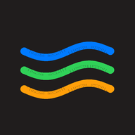

Un diario que te escucha
Registra tu ánimo, las actividades del día, una frase importante, notas y recuerdos. Después explora patrones en tu calendario y tus estadísticas.

MareasAbrir la aplicación →Mareas reúne tu diario de ánimo y tu agenda escolar para que puedas cuidarte, ordenar tus estudios y reconocer tu propio ritmo.
Registra tu ánimo, las actividades del día, una frase importante, notas y recuerdos. Después explora patrones en tu calendario y tus estadísticas.
Organiza asignaturas, horarios, periodos de evaluación, notas y criterios. Planifica tareas y dedica sesiones Pomodoro a cada materia.
Revisa tus momentos, hábitos y avances en un resumen visual que puedes guardar y compartir.
Mareas guarda tus registros en el dispositivo. Puedes crear copias de seguridad y elegir si quieres activar la sincronización en la nube. Empieza sin rellenar perfiles de ejemplo.
Probar Mareas